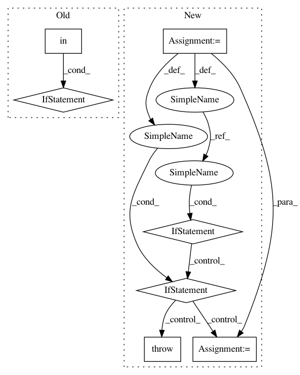

dc42abb2f5f7dd059cf6fac3eae2832931925573,python/ray/tune/config_parser.py,,create_trial_from_spec,#Any#Any#Any#,150
Before Change
args, _ = parser.parse_known_args(to_argv(spec))
except SystemExit:
raise TuneError("Error parsing args, see above message", spec)
if "resources_per_trial" in spec:
trial_kwargs["resources"] = json_to_resources(
spec["resources_per_trial"])
return Trial(
// Submitting trial via server in py2.7 creates Unicode, which does not
// convert to string in a straightforward manner.
trainable_name=spec["run"],
After Change
global _cached_pgf
spec = spec.copy()
resources = spec.pop("resources_per_trial", None)
try:
args, _ = parser.parse_known_args(to_argv(spec))
except SystemExit:
raise TuneError("Error parsing args, see above message", spec)
if resources:
if isinstance(resources, PlacementGroupFactory):
trial_kwargs["placement_group_factory"] = resources
elif callable(resources):
if resources in _cached_pgf:
trial_kwargs["placement_group_factory"] = _cached_pgf[
resources]
else:
pgf = PlacementGroupFactory(resources)
_cached_pgf[resources] = pgf
trial_kwargs["placement_group_factory"] = pgf
else:
try:
trial_kwargs["resources"] = json_to_resources(resources)
except (TuneError, ValueError) as exc:
raise TuneError("Error parsing resources_per_trial",
resources) from exc
return Trial(
// Submitting trial via server in py2.7 creates Unicode, which does not
// convert to string in a straightforward manner.
trainable_name=spec["run"],
In pattern: SUPERPATTERN
Frequency: 3
Non-data size: 7
Instances
Project Name: ray-project/ray
Commit Name: dc42abb2f5f7dd059cf6fac3eae2832931925573
Time: 2021-01-18
Author: krfricke@users.noreply.github.com
File Name: python/ray/tune/config_parser.py
Class Name:
Method Name: create_trial_from_spec
Project Name: ray-project/ray
Commit Name: dc42abb2f5f7dd059cf6fac3eae2832931925573
Time: 2021-01-18
Author: krfricke@users.noreply.github.com
File Name: python/ray/tune/config_parser.py
Class Name:
Method Name: create_trial_from_spec
Project Name: ray-project/ray
Commit Name: bff50cfc37380140d53debfb140e262a38668db0
Time: 2020-12-18
Author: 62982571+Gekho457@users.noreply.github.com
File Name: python/ray/autoscaler/_private/kubernetes/config.py
Class Name:
Method Name: _get_resource
Project Name: PetrochukM/PyTorch-NLP
Commit Name: 6a5916968838686e332fb68a10cb30222843fbd9
Time: 2018-04-26
Author: florian.joh.schaefer@gmail.com
File Name: torchnlp/word_to_vector/pretrained_word_vectors.py
Class Name: _PretrainedWordVectors
Method Name: __getitem__